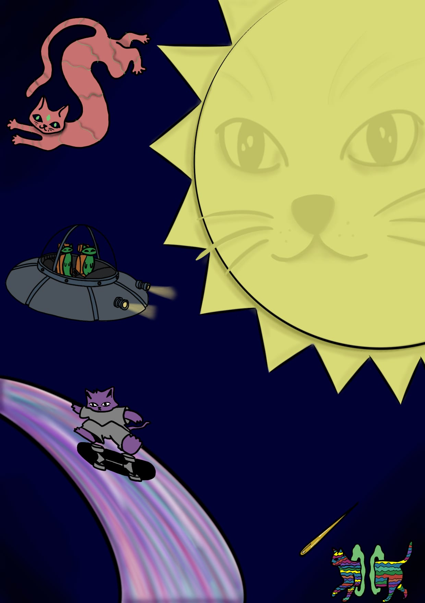

ECLIP SOUL

APHELION
Aphelion, Antik Yunanca'da "Apo" (uzak, ayrı) ve "Helios" (Güneş) kelimelerinin birleşimidir. Tam anlamı: "Güneş'ten en uzak nokta".
Astronomide bir gezegenin, asteroitin ya da kuyruklu yıldızın eliptik yörüngesi üzerinde Güneş'e olan mesafesinin maksimum olduğu konumu ifade eder.
"Güneş, çok eski zamanlarda, henüz kimse yolları ve sınırları bilmezken ruhlarımızın dinlendiği o uçsuz bucaksız, altın rengi odaymış."
Sonra bir gün, hepimiz o büyük kapıdan dışarı adım atmışız. Belki merakımızdan, belki de karanlığın neye benzediğini öğrenmek istediğimizden. Kapı arkamızdan sessizce kapanmış.
Şimdi burada, bu sert ve gri dünyanın ortasında, aslında hepimiz birer "ev hasreti" çekiyoruz. Sokaklarda yürürken omuzlarımızın neden bu kadar ağır olduğunu, kalbimizin neden durup dururken sebepsiz bir sızıyla dolduğunu anlamıyoruz. Oysa cevabı çok basit: Evimizden çok uzaktayız.
Gökyüzüne Bakmanın Sancısı
Bazen bir akşamüstü, gökyüzü o turuncu ve kızıl renklere boyandığında, kaldırımın ortasında öylece durup bakarsın ya... İşte o an, evin pencerelerinin ışığının yandığı andır. İçeride bir yerlerde sofralar kuruluyor, tanıdık sesler birbirine karışıyor gibi hissedersin. Bir adım atsan eşikten içeri girecekmişsin gibi gelir ama ayakların yere çivilenmiştir. Güneş alçaldıkça, o devasa evin kapıları da yavaş yavaş kapanır.
Gurbetteki Gölgeler
Biz burada, o büyük yangının sadece hatıralarıyla ısınıyoruz. Başkalarının sevgisine muhtaç kalmamız, bir gülüşün peşinden sürüklenmemiz hep o yüzden. Çünkü o evde sevgi, nefes almak kadar doğaldı; burada ise onu tırnaklarımızla kazıyarak bulmaya çalışıyoruz. Üşüdüğümüzde üzerimize bir hırka alıyoruz ama ruhumuzun çıplaklığını örtemiyoruz. Çünkü ruh, sadece kendi çatısının altında, o güneşten odada gerçekten huzur bulacağını biliyor.
"Bizler, kapının önünde unutulmuş anahtarlar gibiyiz; paslanıyoruz ama hala o kapıyı açabileceğimiz günü düşlüyoruz. Güneş her sabah doğduğunda bize aslında kim olduğumuzu fısıldıyor: 'Siz buraya ait değilsiniz, siz ışığın çocuklarısınız.'"
Nisan sayımız; uzaklaştıkça özlem büyüyen, evine dönmeyi bekleyen herkes için. Aphelion ile...
— Deniz, Aphelion
📖 Dergiyi Oku (PDF)
📘 Dergiyi dijital flipbook olarak okumak için:
Flipbook'u Aç →